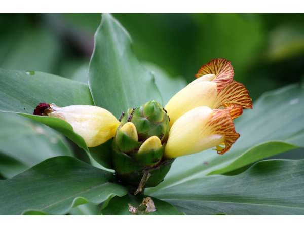

Chamaecostus cuspidatus
Common Names: Insulin Plant, Fiery Costus, Step Ladder Plant, Spiral Flag
Local Name: Insulin Keerai (Tamil), Insulin Patta (Hindi), Chamaecostus (common)
Family: Costaceae
Origin: Brazil; naturalized across tropical Asia
Plant Type: Perennial tropical herb
Average Lifespan: Many years; spreads by rhizomes
| Growth Habit | Upright, clump-forming herb with spirally arranged leaves on fleshy stems |
| Plant Size | 60–90 cm tall |
| Leaves | Large, oval, 10–20 cm long, glossy dark green above, purple-red beneath; arranged spirally on stem |
| Flowers | Bright orange-red, borne in terminal cone-like heads; showy and attractive |
| Flower Characteristics | Blooms intermittently year-round; flowers attract sunbirds and bees |
| Root System | Fleshy rhizomes; spreads to form dense clumps |
| Climate | Tropical and subtropical; warm and humid |
| Temperature Range | 18–35°C; frost-sensitive |
| Rainfall Requirement | 1000–2000 mm; prefers consistent moisture |
| Soil Type | Rich, moist, well-drained loamy soil with high organic matter |
| Soil pH Preference | 5.5–7.0 |
| Sun Requirement | Partial shade to bright indirect light; protect from harsh afternoon sun |
| Spacing | 30–50 cm between plants |
| Irrigation Method | Regular watering; keep soil consistently moist |
| Water Requirement | Moderate to high; do not allow to dry out completely |
| Can it Grow in Pots? | Yes, in medium to large containers |
| Fertilizer Schedule | Monthly with balanced organic fertilizer |
| Recommended Organic Fertilizers | Compost, vermicompost, cow dung; avoid excess nitrogen |
| Mulching Practice | Mulch to retain moisture and protect rhizomes |
| Common Pests | Aphids, mealybugs; generally pest-resistant |
| Common Diseases | Root rot in waterlogged conditions; leaf spot in humid weather |
| Disease Prevention & Remedies | Good drainage; avoid overwatering; adequate spacing for air circulation |
| Pruning Time | Remove dead stems; divide clumps every 2–3 years |
| How to Prune | Cut old stems at base after they die back; harvest leaves before flowering for best medicinal quality |
| Flowering Months | Year-round in tropical climates; peak in summer and monsoon |
| Pollination Type | Insect and bird pollinated; sunbirds are primary pollinators |
| Propagation by Cuttings | Stem cuttings or rhizome division; most reliable method; roots in 2–3 weeks |
| Propagation by Seeds | Seeds germinate in 2–3 weeks; less commonly used |
| Water Usage | Moderate; suitable for shaded garden beds and understory planting |
| Biodiversity Benefits | Flowers attract sunbirds and bees; dense clumps provide ground habitat |
| Companion Plants | Other medicinal herbs; shade-tolerant plants; ginger family plants |
| Commercial Production Regions | Tamil Nadu, Kerala, Karnataka, Andhra Pradesh; widely across tropical Asia |
| Market Uses | Medicinal herb, Ayurvedic and Siddha formulations, ornamental garden plant |
| Market Value (Approx.) | ₹100–300 per plant; dried leaves ₹200–500 per kg |
| Symbolism | Widely known as "Insulin Plant" in India due to its traditional use in diabetes management; symbol of natural healing |
| Traditional Uses | Leaves chewed or made into juice for diabetes; used in Siddha and Ayurvedic medicine; one leaf per day is the traditional dosage |
| Digestive Health | Traditionally used for digestive disorders and liver health |
| Anti-inflammatory Properties | Leaf extracts show anti-inflammatory activity; used for joint pain and skin conditions |
| Immune Support | Rich in antioxidants; traditionally used to boost immunity |
| Heart Health | Traditional use for managing cholesterol and blood pressure alongside blood sugar |
Disclaimer: Information provided is for educational purposes only and not a substitute for medical advice.
Add your field observations here.